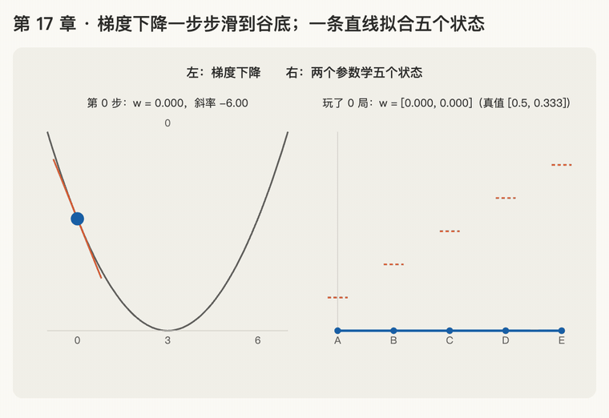

第 17 章 · 函数近似与梯度下降：表格装不下，换成一个会"猜"的函数
本章回答：状态多到表格装不下时（围棋、机器人的连续关节角），价值怎么存？"梯度下降"是什么？怎么用它把一个函数调得越来越准？
讲解日期：2026-11-13 · 上一章：第 16 章 SARSA 与 Q-learning · 下一章：第 18 章 DQN
对应原文：Sutton & Barto 第 9 章开头、§9.1–9.3（L13586–L14019：式 9.1 误差目标、式 9.4–9.7 随机梯度下降、梯度 MC 算法框 L13887、半梯度 TD(0) L13928）、§9.4 线性方法（L14020 起）；CS 285 第 6 讲 Value function fitting（lec-06.txtL48–L75）
本章缩写：\(\hat v(s, \mathbf w)\)：v 上面的帽子 ^ 读"hat"，表示"估计的、近似的"；\(\mathbf w\) = weights（权重，函数里可以调的参数）；∇ 读"nabla"（倒三角），梯度；SGD = Stochastic Gradient Descent（随机 / 梯度 / 下降）；MSE = Mean Squared Error（均方误差：差值平方再平均）；\(\mathbf x(s)\)：状态 s 的特征向量（feature）。全部缩写见 附录 · 缩写与术语表
讲解
第一步：表格装不下：用一个函数来"猜"价值（2026-11-13）
到目前为止，每个状态（或状态–动作）都在表格里占一格：4×4 网格 16 格，悬崖 48 × 4 = 192 格。
问题（第 9 章开头）：
- 围棋局面约 \(10^{170}\) 种，表格根本存不下；
- 机器人关节角是连续的（30.1°、30.12°……），无穷多个状态；
- 更要命的是泛化：表格里每一格独立，学会了 30.1° 的价值，对 30.12° 一点帮助都没有，而它们明明差不多。
办法：函数近似 function approximation：不再每个状态存一个数，而是用一个带参数的函数来算价值：
- \(\hat v\)（读"v hat"）：近似出来的价值；
- \(\mathbf w\)：函数里能调的参数（权重），个数远少于状态数（L13590–L13603）；
- 调一个 \(\mathbf w\)，很多状态的估计会一起变：这就是泛化。
类比：猜房价。 表格做法 = 每套房子单独记一个价；函数做法 = 总结一个公式"房价 ≈ 每平米单价 × 面积 + 地段加价"。新房子没见过，代进公式也能猜个大概。公式里的"单价""加价"就是 \(\mathbf w\)。
最简单的函数：线性函数（§9.4）：给每个状态算几个特征 \(\mathbf x(s)\)（描述状态的一串数，Transformer 讲义第 1 章的"向量"），价值 = 特征和权重做点积：
深度强化学习就是把这个函数换成神经网络，这正是"深度"二字的来历（第 18 章）。
一句话：状态太多就不存表格，改用带参数 \(\mathbf w\) 的函数 \(\hat v(s, \mathbf w)\) 去猜；调 \(\mathbf w\) 会让相似的状态一起变（泛化）。
第二步：导数 = 斜率：往右挪一点，函数变了多少（2026-11-13）
要调 \(\mathbf w\)，先要知道"往哪边调、调多少"。这要用到导数。Transformer 讲义里只提过一句，这里从头讲。
类比：在山坡上蒙着眼睛下山。 你看不见山谷在哪，但脚能感觉到脚下的坡往哪边斜、斜得多厉害。往下坡的方向迈一步，就离谷底近一点。
导数 derivative 就是"脚下的坡度"：自变量往右挪一点点，函数值变了多少（斜率）。
用数字算：\(f(x) = x^2\)，在 x = 3 处：
| x | \(f(x) = x^2\) |
|---|---|
| 2.9999 | 8.99940001 |
| 3 | 9 |
| 3.0001 | 9.00060001 |
往右挪 0.0001，函数涨了约 0.0006，斜率 ≈ 0.0006 / 0.0001 = 6。
公式：\(x^2\) 的导数是 \(2x\)，在 3 处是 \(2 \times 3 = 6\)，对上了。记号 \(\frac{d f}{d x}\)（读"f 对 x 的导数"）。
斜率的符号告诉你方向：
- 斜率 > 0：往右走函数变大，想变小就往左走；
- 斜率 < 0：往右走函数变小，想变小就往右走；
- 斜率 = 0：平地，可能已经到谷底。
梯度 gradient ∇：参数不止一个时（\(\mathbf w = [w_1, w_2, \dots]\)），对每个参数各求一个斜率，排成一个向量，就是梯度 \(\nabla f\)。它指向函数上升最快的方向。
一句话：导数是斜率（往右挪一点函数变多少），符号告诉你往哪走能变小；多个参数各求一个斜率排成向量就是梯度。
第三步：梯度下降：沿着下坡方向，一小步一小步走（2026-11-13）
梯度下降 gradient descent：想让一个函数（比如"误差"）变小，就反复朝梯度的反方向走一小步：
用数字走一遍：让 \(f(w) = (w - 3)^2\) 最小（答案显然是 w = 3）。导数是 \(2(w - 3)\)，步长 0.1，从 w = 0 出发：
| 步 | w | 导数 2(w − 3) | 新 w = w − 0.1 × 导数 |
|---|---|---|---|
| 1 | 0 | −6 | 0 + 0.6 = 0.6 |
| 2 | 0.6 | −4.8 | 0.6 + 0.48 = 1.08 |
| 3 | 1.08 | −3.84 | 1.08 + 0.384 = 1.464 |
| … | |||
| 30 | 2.996 |
w 一步步走向 3。离 3 越远，坡越陡，步子越大；越靠近 3，坡越缓，步子越小，自然就停下来了。
用在价值估计上（§9.3，L13768 起）：我们想让估计 \(\hat v(S_t, \mathbf w)\) 接近目标 \(U_t\)（比如 MC 的真实回报 \(G_t\)）。误差是 \([U_t - \hat v(S_t, \mathbf w)]^2\)。对它做梯度下降，整理后得到（式 9.7，L13874）：
和表格版对照（第 13 章"新 = 旧 + 步长 × (目标 − 旧)"）：
| 表格（第 14–15 章） | 函数近似（本章） | |
|---|---|---|
| 改什么 | 这一格 \(V(S_t)\) | 参数 \(\mathbf w\) |
| 改多少 | \(\alpha[\text{目标} - V(S_t)]\) | \(\alpha[\text{目标} - \hat v]\,\times \nabla\hat v\) |
多出来的 \(\nabla \hat v\) 告诉你：每个参数对这个状态的估计影响多大，影响大的多改一点。线性函数时 \(\nabla \hat v = \mathbf x(s)\)，就是特征本身（§9.4，L14020–L14060）。
"随机"在哪：每次只用一个样本（一个状态、一个回报）算梯度，而不是把所有状态的误差加起来再算，这叫随机梯度下降 SGD。每一步方向有点歪，但平均下来是对的。
一句话：梯度下降 = 朝梯度反方向走一小步；用在价值上就是式 9.7：\(\mathbf w\) 往"目标 − 估计"的方向挪，乘上每个参数的影响 \(\nabla\hat v\)。
第四步：随机游走上试一试：两个数就学会五个状态（2026-11-13）
还是第 14–15 章的随机游走（A–E 五个格子）。这次不用表格，用线性函数，只有 2 个参数：
- 特征 \(\mathbf x(s) = [1,\ \text{位置}]\)，位置 A = −1、B = −0.5、C = 0、D = 0.5、E = 1；
- \(\hat v(s, \mathbf w) = w_1 \times 1 + w_2 \times \text{位置}\)：一条直线。
目标用整局回报 \(G\)（梯度 MC，算法框 L13887）。玩 5000 局（步长从 0.02 慢慢变小）：
| A | B | C | D | E | |
|---|---|---|---|---|---|
| 学到的 \(\hat v\) | 0.159 | 0.330 | 0.500 | 0.671 | 0.842 |
| 真实价值 | 0.167 | 0.333 | 0.5 | 0.667 | 0.833 |
学到的 \(\mathbf w = [0.5,\ 0.341]\)，真实答案是 \([0.5,\ 1/3]\)：两个数就表示了全部五个状态，而且很准（因为真实价值本来就是一条直线）。
泛化的好处：假如有一局只经过了 D、E，表格版只会更新 D、E；线性版更新的是 \(w_1, w_2\)，A、B、C 的估计也跟着动了。
用 TD 目标会怎样：半梯度（L13905–L13930）：把目标 \(U_t\) 换成第 15 章的 \(R + \gamma\hat v(S', \mathbf w)\)，就是半梯度 TD(0) semi-gradient TD。"半"是因为目标里也有 \(\mathbf w\)，但求梯度时假装它是常数、不对它求导。这样做更快，但不再是严格的梯度下降，有时会不稳定。第 18 章的"目标网络"就是为了让这个"假装常数"真的变成常数。
一句话：随机游走上 2 个参数的直线就学准了 5 个状态；目标换成 TD 叫半梯度，目标里的 \(\mathbf w\) 不求导，快但可能不稳。
动画演示：梯度下降一步步滑到谷底；直线拟合五个状态

可交互版：animations/l17-function-approx.html（要能点按钮、拖滑块，需要用本地服务打开，见 animations/README.md"跑起来看"）。
怎么看：
- 左边是 \(f(w) = (w - 3)^2\) 的山谷，小球从 w = 0 出发，每帧走一步，切线显示当前斜率（第二、三步）；
- 步子越来越小，停在 w = 3；
- 右边是随机游走五个状态：一条直线 \(\hat v = w_1 + w_2 \times\) 位置，每玩若干局更新一次，直线慢慢贴到真实值 1/6 … 5/6（第四步）；
- 滑块调步长：太大小球会在谷底两边来回跳，甚至越跳越远。
练习与作答记录
题 1：\(f(w) = (w - 3)^2\)，现在 w = 5，步长 0.1。斜率是多少？走一步以后 w 是多少？往哪个方向走了？
作答：（待作答）
题 2：线性函数 \(\hat v = w_1 + w_2 \times \text{位置}\)，\(\mathbf w = [0.5, 0.3]\)。D（位置 0.5）的估计是多少？如果某局 D 之后的回报是 1、α = 0.1，按式 9.7（线性时 \(\nabla\hat v = \mathbf x = [1, 0.5]\)）更新后 \(\mathbf w\) 是多少？
作答：（待作答）
题 3：用自己的话说：为什么函数近似能"泛化"，而表格不能？
作答：（待作答）
口诀
状态太多不存表，带参数的函数来猜：\(\hat v(s, \mathbf w)\)；
导数是斜率，往右挪一点看变多少；多个参数排一排就是梯度；
梯度下降：朝下坡走一小步，坡陡步大、坡缓步小；
式 9.7：\(\mathbf w\) += α × (目标 − 估计) × 梯度；TD 目标不求导叫半梯度。
本章复习卡片
- R29（导数 = 斜率；梯度下降 \(w \leftarrow w - \text{步长} \times \frac{df}{dw}\)；\((w-3)^2\) 从 0 → 0.6 → 1.08）
- R30（函数近似 \(\hat v(s, \mathbf w)\) 与 SGD 更新式 9.7；线性时梯度就是特征；半梯度的含义）
附录 · 延伸阅读
留给以后深入学习用，不影响本章主线。★ 是建议先读的。L 行号指
materials/text/books/sutton-barto-RLbook2020.txt。
推荐阅读
| 读什么 | 读哪里 | 读它为了什么 |
|---|---|---|
| ★ Sutton & Barto §9.1–9.3 | L13619–L14019（式 9.1、9.4–9.7，梯度 MC L13887，半梯度 TD(0) L13928） | 本章原文 |
| Sutton & Barto §9.4 | L14020–L14472 | 线性方法：梯度就是特征；1000 状态随机游走的实验 |
| ★ CS 285 第 6 讲 | lec-06.txt L48–L75（Value function fitting） |
深度 RL 里怎么训练价值网络：监督回归，目标是 MC 回报或 bootstrapped 目标 |
| CS 285 第 7 讲 | lec-07.txt L120–L180（Fitted Q-iteration） |
把第 12 章价值迭代换成"回归一个 Q 网络"（第 18 章的前身） |
| 《超越原版 Transformer》第 2–3 章 | beyond-transformer/notes/lessons/ |
梯度与反向传播更细的讲解（神经网络怎么一层层求梯度） |
| Sutton & Barto §11.3 | L18099 起（deadly triad 致命三角） | 函数近似 + bootstrapping + off-policy 一起用为什么可能发散（第 18 章的动机） |
数学原理
- 导数的定义：\(f'(x) = \lim_{h \to 0}\frac{f(x+h) - f(x)}{h}\)；代码里用中心差分 \(\frac{f(x+h) - f(x-h)}{2h}\) 近似。常用：\((x^2)' = 2x\)，\((ax + b)' = a\)，链式法则 \([f(g(x))]' = f'(g(x))\,g'(x)\)。
- 式 9.7 的推导：对 \(\frac12[U_t - \hat v(S_t, \mathbf w)]^2\) 求梯度，链式法则得 \(-[U_t - \hat v]\,\nabla\hat v\)；梯度下降减去它，就是加上 \(\alpha[U_t - \hat v]\nabla\hat v\)（式 9.4–9.5 → 9.7，L13817–L13874）。
- 目标函数：\(\overline{VE}(\mathbf w) = \sum_s \mu(s)[v_\pi(s) - \hat v(s, \mathbf w)]^2\)（式 9.1），μ(s) 是状态出现的比例：常去的状态更重要。
- 半梯度：目标 \(R + \gamma\hat v(S', \mathbf w)\) 也依赖 \(\mathbf w\)，但更新时只对 \(\hat v(S, \mathbf w)\) 求导；线性情况下仍收敛（到 TD 不动点 TD fixed point，L14139），非线性 + off-policy 时可能发散。
- 步长要变小：常数步长时 \(\mathbf w\) 会在真值附近一直抖；让 α 随时间变小（满足第 13 章的收敛条件）才能停下来。本章代码用 \(\alpha_k = \frac{0.02}{1 + k/100}\)。
公式清单
| 公式 | 意思 |
|---|---|
| \(\hat v(s, \mathbf w) \approx v_\pi(s)\) | 函数近似 |
| \(\hat v(s, \mathbf w) = \mathbf w \cdot \mathbf x(s)\) | 线性函数 |
| \(w \leftarrow w - \eta \frac{df}{dw}\) | 梯度下降（η 读"eta"，步长） |
| \(\mathbf w \leftarrow \mathbf w + \alpha[U_t - \hat v(S_t, \mathbf w)]\nabla\hat v(S_t, \mathbf w)\) | SGD 价值更新（式 9.7） |
| \(U_t = G_t\) / \(U_t = R_{t+1} + \gamma\hat v(S_{t+1}, \mathbf w)\) | 梯度 MC / 半梯度 TD(0) |
代码对照：把本章的数字用代码算一遍
代码在
cs285-deep-rl/solutions/chapter-code/ch17_function_approx.py，测试tests/test_ch17_24.py。
同一章的 Jupyter notebook：cs285-deep-rl/solutions/chapter-code/notebooks/ch17_function_approx.ipynb（讲解和代码放在一起，一格一格边读边跑；代码都写在格子里，Colab 也能直接打开）。
bash cd cs285-deep-rl/solutions/chapter-code uv run python ch17_function_approx.py
| 讲义 | 代码 | 跑出来 |
|---|---|---|
| 斜率 | slope(lambda x: x * x, 3.0) |
6.0 |
| 梯度下降 | gradient_descent() |
0 → 0.6 → 1.08 → 1.464 → … → 2.996 |
| PyTorch 自动求导 | (x**2).backward(); x.grad |
6.0 |
| 线性梯度 MC | gradient_mc_linear() |
w = [0.5, 0.341]，五个估计 0.159 … 0.842 |
关键几行：
x = torch.tensor(3.0, requires_grad=True) # 告诉 PyTorch：要对 x 求导
(x ** 2).backward() # 自动算导数
x.grad # 6.0
w += a * (G - w @ x) * x # 式 9.7：线性时 ∇v̂ = x
代码里才看得到的：神经网络有几百万个参数，没人手算导数；PyTorch 的 backward() 会自动把每个参数的导数算好，放在 .grad 里。第 18 章训练 Q 网络、第 20 章训练策略网络，都是"算一个 loss → backward() → 优化器走一步"这三行。